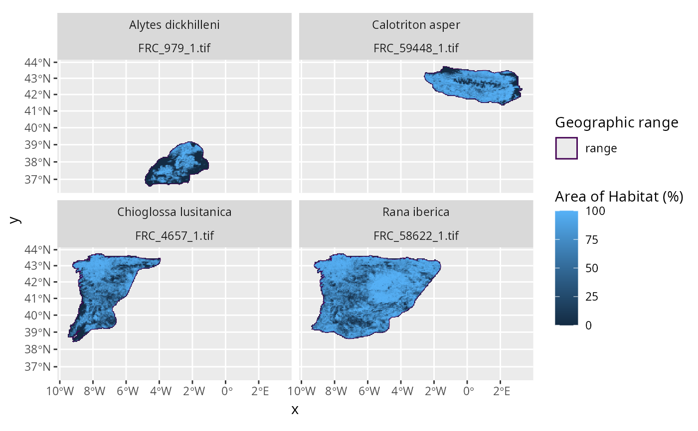

Calculate fractional coverage of species' Area of Habitat.
Usage
calc_spp_frc_data(
x,
res,
output_dir,
template_data = NULL,
cache_dir = tempdir(),
force = FALSE,
n_threads = 1,
engine = "terra",
cache_limit = 1000,
verbose = TRUE,
...
)Arguments
- x
sf::st_sf()Object containing the species data. This object should be produced using thecreate_spp_aoh_data()function.- res
numericResolution for computing fractional coverage. Note that the argument toresmust be a factor of the the resolution of the underlying Area of Habitat data. For example, a value of 5000 would be a valid argument if the underlying data had a resolution of 100 m.- output_dir
charactercharacterFolder path to save raster (GeoTIFF) files containing the fractional coverage data.- template_data
terra::rast()Raster data to use as a template for computing fractional coverage. Note that the argument should have the same spatial properties as the elevation and habitat data used to generate the Area of Habitat data. Defaults toNULLsuch that template data are automatically imported as the default global habitat dataset (usingget_lumb_cgls_habitat_data()).- cache_dir
characterFolder path for downloading and caching data. By default, a temporary directory is used (i.e.,tempdir()). To avoid downloading the same data multiple times, it is strongly recommended to specify a persistent storage location (see Examples below).- force
logicalShould the data be downloaded even if the the data are already available? Defaults toFALSE.- n_threads
integerNumber of computational threads to use for data processing. To reduce run time, it is strongly recommended to set this parameter based on available resources (see Examples section below). Note that parallel processing is only used for processing the habitat classification and elevation data. As such, this parameter will have no influence when using preprocessed datasets. Defaults to 1.- engine
characterValue indicating the name of the software to use for data processing. Available options include"terra"or"gdal". Defaults to"terra".- cache_limit
integerAmount of memory (Mb) for caching when processing spatial data with the Geospatial Data Abstraction Library (GDAL). This parameter is only used when using the"gdal"engine. If possible, it is recommended to set this as parameter to at 5000 (assuming there is at least 8Gb memory available on the system). Defaults to 1000.- verbose
logicalShould progress be displayed while processing data? Defaults toTRUE.- ...
Arguments passed to
get_lumb_cgls_habitat_data().
Value
An updated version of the argument to x with updated values
for the path, xmin, xmax, ymin, and ymax columns.
The
Details
This function works by (i) creating a template grid based on the specified resolution, (ii) aggregating the Area of Habitat data to the match the spatial origin and resolution of the template grid, and (iii) dividing the aggregated values based on the aggregation factor to express values as fractional coverage.
Output file format
Fractional coverage data are stored in a separate raster (GeoTIFF) file for
each seasonal distribution of each species. Each raster file is assigned a
file name based on a prefix and a combination of the species' taxon
identifier
(per id_no/SISID column in x) and the identifier for the seasonal
distribution (per seasonality in x)
(i.e., file names are named according to FRC_{$id_no}_${seasonality}.tif).
For a given raster file, grid cell values denote the proportion of suitable
habitat located within each cell.
For example, a value of 0 corresponds to 0% fractional coverage,
0.5 to 50% fractional coverage, 1 to 100% fractional coverage.
Missing (NA) values correspond to
grid cells that are located entirely outside of the species' distribution.
See also
This function is useful for creating fractional coverage data when
you have previously generated species' Area of Habitat data.
If you have not previously generated species' Area of Habitat data,
you can use the create_spp_frc_data() to create fractional coverage
data directly.
Examples
# \dontrun{
# find file path for example range data following IUCN Red List data format
## N.B., the range data were not obtained from the IUCN Red List,
## and were instead based on data from GBIF (https://www.gbif.org/)
path <- system.file("extdata", "EXAMPLE_SPECIES.zip", package = "aoh")
# import data
spp_range_data <- read_spp_range_data(path)
# specify settings for data processing
output_aoh_dir <- tempdir() # folder to save AOH data
output_frc_dir <- tempdir() # folder to save coverage data
cache_dir <- rappdirs::user_data_dir("aoh") # persistent storage location
n_threads <- parallel::detectCores() - 1 # speed up analysis
# create cache directory if needed
if (!file.exists(cache_dir)) {
dir.create(cache_dir, showWarnings = FALSE, recursive = TRUE)
}
# create species information data
spp_info_data <- create_spp_info_data(
x = spp_range_data,
cache_dir = cache_dir
)
#> ℹ initializing
#> ✔ initializing [1.5s]
#>
#> ℹ cleaning species range data
#> ✔ cleaning species range data [2s]
#>
#> ℹ importing species summary data
#> ✔ importing species summary data [480ms]
#>
#> ℹ importing species habitat data
#> ✔ importing species habitat data [335ms]
#>
#> ℹ collating species data
#> ✔ collating species data [188ms]
#>
#> ℹ post-processing results
#> ✔ post-processing results [12ms]
#>
#> ✔ finished
# create Area of Habitat data for species
spp_aoh_data <- create_spp_aoh_data(
x = spp_info_data,
output_dir = output_aoh_dir,
n_threads = n_threads,
cache_dir = cache_dir
)
#> ℹ initializing
#> ✔ initializing [5ms]
#>
#> ℹ importing global elevation data
#> ✔ importing global elevation data [8s]
#>
#> ℹ importing global habitat data
#> ! argument to "crosswalk_data" is missing the following 2 habitat classification codes: "7.1", "7.2"
#> ℹ importing global habitat data
#> ✔ importing global habitat data [5s]
#>
#> ℹ generating Area of Habitat data
#> ℹ processing ■■■■■■■■■ [ 25% | ETA: 13s]
#> ℹ processing ■■■■■■■■■■■■■■■■ [ 50% | ETA: 8s]
#> ℹ processing ■■■■■■■■■■■■■■■■■■■■■■■ [ 75% | ETA: 5s]
#> ✔ processing [25.2s]
#>
#> ℹ generating Area of Habitat data
#> ✔ generating Area of Habitat data [25.2s]
#>
#> ℹ post-processing results
#> ✔ post-processing results [13ms]
#>
#> ✔ finished
# compute fractional coverage across a 5 x 5 km spatial grid
spp_aoh_frc_data <- calc_spp_frc_data(
x = spp_aoh_data,
output_dir = output_frc_dir,
res = 5000,
cache_dir = cache_dir
)
#> ℹ importing global habitat data
#> ✔ importing global habitat data [5.8s]
#>
# }
if (FALSE) { # interactive()
# \dontrun{
# preview data
print(spp_aoh_frc_data)
# }
}
# \dontrun{
# plot the data to visualize the range maps and fractional coverage data
plot_spp_frc_data(spp_aoh_frc_data)

# }